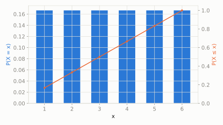

Rolling one ordinary, perfectly fair six-sided die.
What's the chance of rolling a 4, and what's the chance of rolling a 4 or higher?
scipy.stats.randint
Every whole number in a range is exactly equally likely -- no favorites. It's the discrete cousin of the continuous Uniform distribution, and the simplest possible 'fair' randomness.
| parameter | default used here | meaning |
|---|---|---|
low | 1 | smallest possible value (inclusive) |
high | 7 | one past the largest possible value |
Rolling one ordinary, perfectly fair six-sided die.
What's the chance of rolling a 4, and what's the chance of rolling a 4 or higher?
scipy.statsimport scipy.stats as stats
import numpy as np
dist = stats.randint(low=1, high=7)
print('P(roll a 4):', round(dist.pmf(4), 4))
print('P(roll 4 or higher):', round(dist.sf(3), 4))